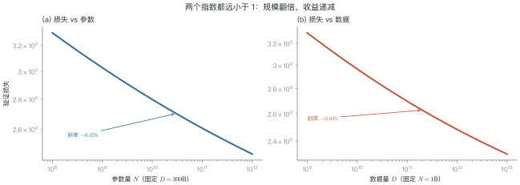
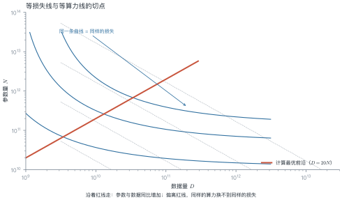
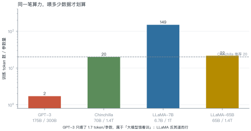
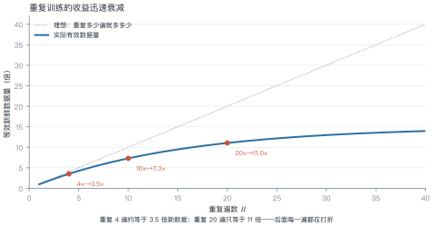

第 6 讲 Scaling Laws¶
本讲位置
第 5 讲讲完了一个 block 长什么样，本讲回答"该堆多大"。这是全书唯一一个能用两个指数预测未来的地方——也是所有训练预算决策的依据。
📅 事实核查至 2026-11
Kaplan (2020)、Chinchilla (2022)、重复训练 (2023)、μP (2022) 的结论均已核对原文。
学习目标¶
学完本讲，你应该能够：
- 写出损失关于参数量与数据量的幂律形式，并说明两个指数的含义；
- 用拉格朗日乘子推出 Chinchilla 的计算最优配比 \(N\propto C^{0.5}\)；
- 解释为什么 LLaMA 要"超额喂数据"，并用算力账算清临界点；
- 估算重复训练的有效数据量。
0 直觉：一笔钱怎么花¶
假设你有 \(10^{23}\) FLOPs 的预算。两个选择：
- 训一个 175B 的模型，只喂 300B token；
- 训一个 70B 的模型，喂 1.4T token。
同样的算力，哪个损失更低？ 2022 年之前大家默认选前者（大就是好），Chinchilla 证明了后者更优。
这个问题可以写成约束优化：
一句话总结
Scaling law 把"该多大"变成一个可解的优化问题：损失随规模幂律下降，约束是算力，解出来参数与数据应同比增加。
1 两条幂律¶
1.1 函数形式¶
Kaplan 等人发现，验证损失可以写成：
- 第一项：模型太小的惩罚；
- 第二项：数据太少的惩罚；
- \(L_\infty\)：不可约损失（irreducible loss），即数据本身的熵，再怎么堆规模也降不下去。

1.2 怎么拟合¶
方法很朴素：固定一个变量，扫另一个。
- 固定 \(D\)，训 5–6 个不同 \(N\) 的模型，记录损失；
- 在 log-log 坐标上做线性回归，得到 \(\alpha_N\) 与 \(N_c\)；
- 反过来固定 \(N\) 扫 \(D\)，得到 \(\alpha_D\) 与 \(D_c\)。
难点在于 \(L_\infty\) 是未知常数，不能直接线性化——实践中用非线性最小二乘，或先估一个 \(L_\infty\) 再拟合。
1.3 幂律为什么会成立¶
没有严格证明，但有几个有说服力的直觉：
- 高维空间里的"容量"是幂次的：参数增加时，模型能区分的模式数按多项式增长，而不是指数增长，所以损失下降是幂律而不是指数。
- 语言本身是重尾的：少数模式出现极多、多数模式极罕见。模型先学会高频模式（收益大），再啃长尾（收益小），合起来就是一条幂律。
- 误差可以分解：模型误差 ≈ 容量不足 + 数据不足 + 噪声。前两项各是一条幂律，第三项是常数 \(L_\infty\)。
这三条都不是定理，但能解释为什么幂律在跨越四个数量级的范围内都相当稳。
例 6.1 给定算力，怎么分配¶
预算 \(C=10^{23}\) FLOPs，用 Chinchilla 的结论 \(D=20N\)。
第一步，代入约束：
第二步，解出 \(N\)：
第三步，算 \(D\)：
验算：\(6\times2.89\times10^{10}\times5.77\times10^{11}=1.0\times10^{23}\) ✓
也就是说，\(10^{23}\) 的预算应该训一个 29B 模型、喂 577B token，而不是 175B 只喂 300B。
从这个例子里能读出三件事
- 参数与数据同比增加：\(N\propto C^{0.5}\)、\(D\propto C^{0.5}\)，两者比例恒定；
- Chinchilla 之前所有模型都训练不足：GPT-3 的 \(D/N\) 只有 1.7，Chinchilla 建议 20；
- 这个结论有前提：它只优化"训练算力"，没考虑推理成本——这正是 LLaMA 反着来的原因。
20 这个数字有多可靠
不同论文拟合出的 \(D/N\) 在 15–25 之间浮动，取决于语料质量、分词器与损失定义。把它当"数量级"用（十几到二十几），不要当常数用。真正的决策应该基于自己数据上的一次小规模拟合。
2 推导：为什么是 \(C^{0.5}\)¶
把 (6.1) 里与 \(N\)、\(D\) 有关的两项记作 \(A N^{-\alpha}+B D^{-\beta}\)，在约束 \(6ND=C\) 下求极值。
用拉格朗日乘子：
对 \(N\) 与 \(D\) 分别求导置零：
两式相除消去 \(\lambda\)：
若近似取 \(\alpha\approx\beta\)（实测两者接近），则 \(N\propto D\)，结合 \(6ND=C\) 就得到

3 现实偏差：为什么 LLaMA 反着来¶

Chinchilla 只优化训练成本。但一个模型训完是要服务的——服务成本随调用量线性增长（第 1 讲图 L1-2）。
小模型 + 多数据的好处：训练多花一点，推理永久便宜。
例 6.2 算清临界点¶
比较两个方案：
| 13B（Chinchilla 配比） | 7B（超额训练） | |
|---|---|---|
| 数据量 | 260B | 1T |
| 训练 FLOPs（\(6ND\)） | \(2.03\times10^{22}\) | \(4.20\times10^{22}\) |
| 推理 1T token（\(2NT\)） | \(2.60\times10^{22}\) | \(1.40\times10^{22}\) |
训练多花的算力：
每服务一个 token 省下的算力：
临界服务量：
结论：只要这个模型累计服务超过 1.8T token，7B 方案就更划算。对任何有真实流量的产品，这个量级几个月就到了。
从这个例子里能读出三件事
- Scaling law 的结论依赖优化目标：只优化训练，选大模型；优化总成本，选小模型多喂数据；
- 临界点是可以算的，不用凭感觉；
- 这解释了 LLaMA 系列的设计：7B/13B 都喂了 1T 以上，专为"部署友好"设计。
4 数据受限时代¶

高质量语料是有限的。按 Chinchilla 的配比，训一个 70B 模型需要 1.4T token，而互联网上高质量的中英文文本可能只有几万亿——很快就用完了。
经验公式（Muennighoff et al., 2023）：
其中 \(R\) 是重复遍数，\(R^*\) 是"重复到第几遍开始明显不值"。
例 6.3 重复训练值不值¶
| 重复遍数 | 有效数据（倍） | 相当于多花算力买到的收益 |
|---|---|---|
| 1 | 0.97 | 基准 |
| 4 | 3.51 | 3.5× |
| 10 | 7.29 | 7.3× |
| 20 | 11.0 | 11× |
| 40 | 13.9 | 14× |
结论：重复 4 遍以内几乎不亏，20 遍之后基本是白烧算力。
数据快用完时，除了重复训练，还有一个办法：换更省的架构（MoE、稀疏化，第 11 讲）。但在那之前，先把超参迁移搞定——
4.1 数据从哪来¶
"高质量数据快用完了"这句话需要拆开看：
| 来源 | 量级 | 问题 |
|---|---|---|
| Common Crawl 原始网页 | 数十万亿 token | 噪声极大，清洗后剩 10%–20% |
| 书籍 / 论文 / 代码 | 数万亿 token | 质量高但版权敏感 |
| 合成数据 | 无上限 | 会放大教师模型的偏差，且有"模型自噬"风险 |
三条应对路线：
- 更好的清洗：去重、质量分类器、按教育价值打分——同样的原始数据能榨出 2–3 倍有效 token；
- 合成数据：用强模型生成教科书式内容，但必须配比真实数据，否则会退化；
- 重复训练：就是上面那条饱和曲线，4 遍以内几乎不亏。
5 超参迁移：μP¶
换模型宽度时，学习率不能照搬。最大更新参数化（μP，maximal update parametrization） 给出了缩放规则：
- 学习率 \(\propto 1/\text{width}\)；
- 初始化方差 \(\propto 1/\text{width}\)；
- 输出层缩放 \(\propto 1/\text{width}\)。
这样在 1B 上调好的超参，可以直接用到 70B，不必重扫。对训练成本来说，这是实打实的节省——一次超参搜索可能烧掉几十万美元。
5.1 小团队怎么用 scaling law¶
没有千卡集群也能用这套方法。标准做法是用小模型预测大模型：
- 在 \(10^7\)–\(10^9\) 参数区间训 5–6 个模型，每个只需几小时；
- 拟合出指数，外推到目标规模；
- 用外推结果决定"值不值得训"，而不是先烧钱再后悔。
这个流程的价值不在预测精度（外推总会偏），而在于排序：它能告诉你"70B 比 13B 好多少"，即使绝对值估不准，相对差距通常靠得住。
一个经验：外推超过两个数量级，误差会明显变大，此时应把它当"趋势判断"而不是"预算依据"。
# 需要 scipy：uv pip install scipy
import numpy as np
from scipy.optimize import curve_fit
def law(x, a, alpha, c):
"""L = a * x^(-alpha) + c"""
return a * np.power(x, -alpha) + c
# 假设扫了 5 个规模，得到损失
N = np.array([1e8, 3e8, 1e9, 3e9, 1e10])
L = np.array([2.42, 2.21, 2.05, 1.93, 1.84])
popt, _ = curve_fit(law, N, L, p0=[2.0, 0.07, 1.6], maxfev=20000)
print(f"alpha={popt[1]:.3f}, L_inf={popt[2]:.2f}")
# 外推 10 倍规模
print(f"预测 N=1e11 的损失: {law(1e11, *popt):.3f}")
6 工程要点与坑¶
- 幂律只在中段成立：太小（<\(10^7\)）或太大（接近 \(L_\infty\)）都会偏离。
- 数据质量比数量重要：同样的 token 数，清洗过的语料能抵几倍原始数据。
- \(D/N\) 不是教条：20 是"训练最优"，不是"总成本最优"，要按服务量算。
- 拟合至少 5 个点：3 个点拟合出的指数不可信，外推会离谱。
- 换架构要重拟合：MoE、长上下文模型的指数与稠密模型不同。
-
别忽略不可约损失：\(L_\infty\) 决定了天花板，再堆规模也突破不了。
-
数据配比要跟着架构变：MoE 的"有效参数量"比总参数小，\(D/N\) 应按激活参数算。
- 别用验证损失当唯一指标：下游任务的收益常常比损失下降更快饱和。
7 论文与延伸¶
| 年份 | 论文 | 一句话贡献 |
|---|---|---|
| 2020 | Kaplan et al., Scaling Laws for Neural Language Models | 幂律形式与指数 |
| 2022 | Hoffmann et al., Training Compute-Optimal LLMs (Chinchilla) | 参数与数据同比扩展 |
| 2022 | Yang et al., Tensor Programs V (μP) | 超参随宽度迁移 |
| 2023 | Muennighoff et al., Scaling Data-Constrained Language Models | 重复训练的饱和曲线 |
| 2023 | Schaeffer et al., Are Emergent Abilities a Mirage? | 涌现与度量的关系 |
8 习题¶
🟢 概念题
- 为什么 Chinchilla 之前的模型普遍"训练不足"？
- \(D/N=20\) 是普适的吗？什么情况下应该偏离？
🟡 推导题
- 从 (6.1) 与约束 \(6ND=C\) 出发，推导 \(N^\star\propto C^{0.5}\)，并说明当 \(\alpha\ne\beta\) 时指数是多少。
- 用例 6.2 的方法，算 70B vs 13B 的临界服务量。
🔴 实现题
- 用上面的拟合代码，构造 5 组 \((N, L)\) 数据，验证指数估计的稳定性（加噪声重跑 10 次）。
- 实现 (6.4)，画出 \(R^*=15\) 与 \(R^*=30\) 两条曲线并解释差异。
9 本讲小结¶
一个公式
两个结论
- 计算最优：\(N\propto C^{0.5}\)、\(D\propto C^{0.5}\)，配比约 20 token/参数
- 总成本最优：推理量大时，小模型多喂数据更划算
一个数字
重复训练 \(R^*\approx15\) 遍后，收益基本饱和。
来源¶
- Kaplan、Chinchilla、μP、重复训练的公式与指数核对自原文，链接见 §7，核查日期 2026-11。